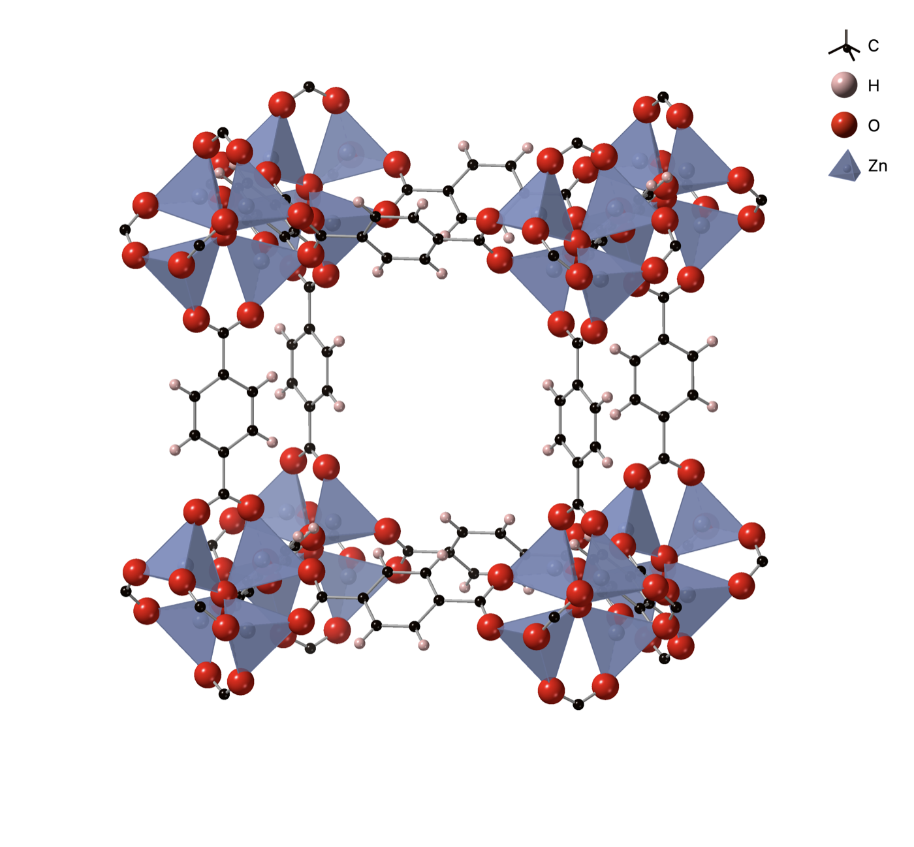

Executive Summary
Artificial intelligence broke through images and language with data. The scaling law, where a model keeps improving as you feed it more data, was the engine behind that success. Move the same formula straight into materials discovery, however, and it stalls. That is the conclusion of "The data-only illusion in materials discovery," a Nature Materials comment commissioned from Berend Smit of EPFL and Susana García of Heriot-Watt University. This piece follows what their rebuttal points to and the question it leaves for anyone who works with data.
According to the summary Smit posted on LinkedIn, the effort spent building the AI itself came to roughly 1% of a real project. The other 99% went to securing high-quality data usable in the application. In vision and language AI the data already existed, in the form of the web and large corpora, but in materials science making the data is itself the research. The diagnosis is that the bottleneck lies not in the algorithm but in the loop that produces high-fidelity data.
Longtime readers of the Pebblous blog will find the claim "data over models" familiar. This piece looks one layer beneath it. In a domain where data is scarce to begin with and hard to make, more data does not guarantee better discovery. In the end, that gap hands AI-Ready Data a single question: is the problem the amount of our data, or its context?
Four numbers from the comment form the backbone of this story: the 1% and the 99% of effort, the count of metal-organic frameworks (MOFs) reported so far, and how many of those have actually had their performance measured.
1%
Effort to build the AI model
Of the whole discovery project
99%
Effort to secure the data
Making high-quality, usable data
~90,000
Reported MOFs
Candidates drawn virtually
1–2
MOFs with measured data
Carbon-capture performance tested
Where the Winning Formula Stops
The AI achievements of the past few years shared one formula: pile up more data, at a larger scale, and the model gets better on its own. Image generation and language models were the proof. The internet already overflowed with photos and sentences, and models grew by swallowing that ocean. Data was something that was simply there, and the research was closer to refining it well and pouring it into the model.
The starting point for Smit and García is that this formula stops in front of materials science. Nature Materials asked the two of them for a comment on the future of AI and materials discovery, and their answer was not an extension of the optimism but a statement of its conditions. AI did transform images and language, yes, but in materials science the scarcity of data and the complexity of synthesis demand a different approach.
The difference lies in where the data sits. In vision and language, data is a resource that already exists; in materials science, producing the data is the substance of the research itself. To know how a new material performs, you have to actually synthesize it and measure it in the lab. That is a different order of cost from scraping the web.
Building the AI Was 1% of the Work
On LinkedIn, Smit summed up their work in a single line. The effort that went into building the AI itself was only about 1% of the total. The other 99% went to the data that made the AI actually useful, the high-quality data that could be fed straight into the application. The model is always what gets the attention, but the time and labor piled up on the data.
What matters is that this ratio is the exact opposite of vision and language AI. There, the data came first, and growing the model was where the game was won. In materials science the order flips. The model is relatively easy to stand up, but the data to train and validate it does not exist in sufficient quantity in the world. Securing data here means not "collecting" but something closer to "producing it through experiments."
So the two of them locate the bottleneck not in the algorithm but in the data-generation loop. Discovery is slow not because smarter models are lacking, but because the process of producing the high-fidelity data to support those models is slow and expensive. The premise the scaling law assumes, that data can be increased at will, simply does not hold in materials science from the outset.
90,000 Candidates, One or Two Measured
The case that shows this gap most vividly is the metal-organic framework, or MOF for short. It is a porous crystalline structure woven from metal ions and organic molecules, and because its tiny internal pores can trap gas, it is considered a strong candidate for carbon capture and gas storage. The appeal of MOFs is that you can imagine countless variations by tweaking the structure little by little.

The problem is the distance between imagination and measurement. According to Smit, the number of MOFs reported to date runs to about 90,000. Yet of those, only one or two hold experimental data solid enough to verify carbon-capture performance. Ninety thousand candidates have been drawn, but the cases in which a candidate has actually been measured doing the job it was meant for are all but nonexistent.
This asymmetry is not accidental but structural. Between the number of materials you can draw virtually and the number you can actually synthesize and measure lies a fundamental gap. Synthesis itself is hard, and experimental verification costs a great deal of time and money. The more candidates AI pours out, the wider this gap grows, because the pace of drawing is fast while the pace of making and measuring stays the same.
Training a model requires data with answers attached. If there are 90,000 candidates but only one or two have measured performance, the model has almost no measured ground truth to learn from. Even calling the data "scarce" understates it. It was never made in the first place.
Chemical Insight Turns Predictions Into Matter
So what is the answer? Smit and García do not conclude that we should abandon AI. AI is a powerful tool, but only when it is combined with deep chemical insight can it turn a virtual prediction into a real material. Drawing candidates and selecting the ones that are genuinely stable, synthesizable, and deliver the intended performance are different tasks. The latter has to bring in chemical principles, physical constraints, and experimental verification.
Domain knowledge here is not decoration but a filter. Knowing which structures can actually be made in the lab, which combinations are unstable to begin with, and how far a measured value can be trusted is the chemist's insight. Without it, the model merely extends an endless list of candidates that look plausible but cannot be built. To say the bottleneck lies in the data-generation loop is also to say that what leads that loop is domain expertise.
Nor does this line of thinking end with this single comment. A similar debate has carried over into perspective papers in other journals, and in East Asian science circles it has spread in the register of a warning that materials science must not blindly worship the AI myth. Rather than one lab's rebuttal, it is closer to a wall that data-scarce fields have hit in common as they collide with scaling optimism.
The Pebblous blog has covered success stories in materials-science AI more than once, from models that predicted superconductors before synthesis to reinforcement learning aimed at candidates that generative models missed. This comment does not contradict those successes. It only adds a condition: for such successes to become the general rule rather than the exception, a model's predictions have to sit inside the loop of chemical insight and experimental verification.
A Problem of Quantity, or of Context?
The materials-science case hands every data-driven organization a single question. What we usually call "clean data" mostly refers to matters of quantity and format: filling in missing values, aligning formats, removing duplicates. But the bottleneck materials science reveals sits earlier than that. If the domain context the data should carry, the field knowledge that corresponds to chemical insight, is missing, then even the tidiest data fails to translate into real discovery.
Put into an organization's language, the distinction runs like this. When AI fails to produce an answer, the cause forks two ways: cases where the data is quantitatively insufficient, and cases where the data is sufficient but lacks the context of the industry, process, and field. In the first case, gather more. In the second, no amount of gathering will make the model's predictions translate into real decisions. This is why AI-Ready Data has to carry not just "cleanliness" but "domain context."
And so this piece leaves a question rather than an answer. If AI in your organization is not delivering the answers you expected, is it because there is too little data, or because that data is missing its domain context? Materials science shows, in an extreme form, that both can be bottlenecks at once. That extreme poses the same question to our own, less extreme, data.
Editor's Note
Pebblous works on diagnosing and preparing the quality and context of data before it goes into AI training. Translated into our language, the message of the materials-science comment is that the value of data is not determined by quantity and cleanliness alone. What domain context that data carries is what decides, in the end, whether a model's predictions become results you can use in the real world.
References
Academic Papers
- 1.Smit, B. & García, S. (2026). "The data-only illusion in materials discovery." Nature Materials.
- 2.Cheetham, A. K. & Seshadri, R. (2024). "Artificial Intelligence Driving Materials Discovery? Perspective on the Article: Scaling Deep Learning for Materials Discovery." Chemistry of Materials.
Primary Source · Author Statement
- 3.Smit, B. (2026). "The data-only illusion in materials discovery." LinkedIn post.
Institutional · Press
- 4.EPFL Laboratory of Molecular Simulation (LSMO). (2026). "The data-only illusion in materials discovery." EPFL.
- 5.Tencent News (腾讯新闻). (2026). "材料科学不能迷信AI神话."